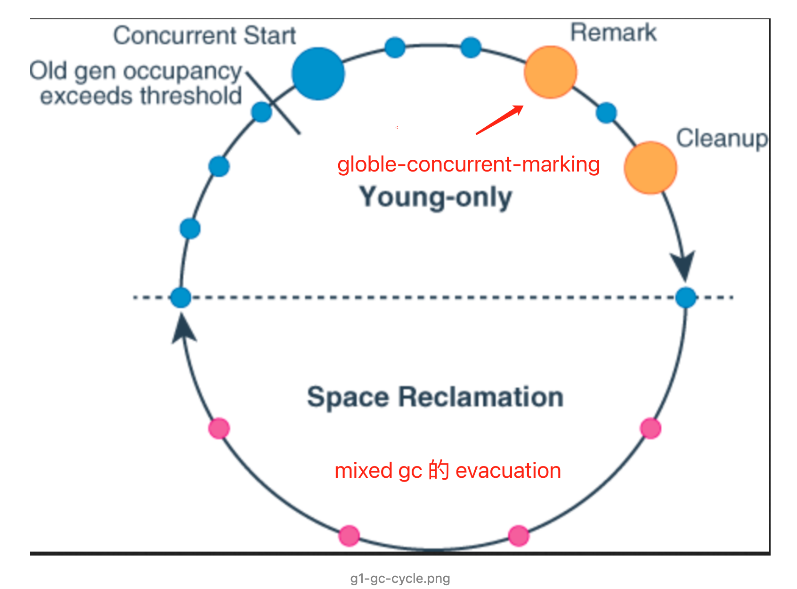
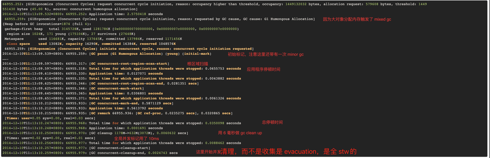

现代垃圾收集器
所有的垃圾收集器，都基于弱分代假设。实际的垃圾回收效率取决于堆内对象的分布状况。垃圾回收并不能解决内存泄漏或者应用程序逻辑的不良分配习惯问题，要处理 JVM 内存回收问题的根本方法是对程序进行调优。
有几个常用原则：
- 减少临时对象，尽量复用内存。
- 使用对象池。
- 主动提前释放对象。
- 主动 gc。
- 好的代码比 tuning 更重要。
- 选 gc 算法比 tuning 参数重要，tuning 参数是最后一步。
其他情况，可以通过 tuning garbage collector 来解决。
操作系统的影响
- SWAP 可能会显著增加 GC 时间，因为被换出的堆还要被换入。
美团的实践
参考：
- Minor GC
- Major GC
- Full GC
垃圾收集器分类


可以看到一个现象：在大部分时候，g1 比 CMS 快，但极端的百分位里，CMS 比 g1 快。
出处见这里。
常用工具
命令行终端
- 标准终端类：jps、jinfo、jstat、jstack、jmap
- 功能整合类：jcmd、vjtools、arthas、greys
可视化界面
- 简易：JConsole、JVisualvm、HA、GCHisto、GCViewer
- 进阶：MAT、JProfiler
命令行推荐 arthas ，可视化界面推荐 JProfiler，此外还有一些在线的平台 gceasy、heaphero、fastthread
，美团内部的 Scalpel（一款自研的 JVM 问题诊断工具，暂时未开源）也比较好用。
指标评价标准
评判 GC 的两个核心指标：
-
延迟（Latency）： 也可以理解为最大停顿时间，即垃圾收集过程中一次 STW 的最长时间，越短越好，一定程度上可以接受频次的增大，GC 技术的主要发展方向。
-
吞吐量（Throughput）： 应用系统的生命周期内，由于 GC 线程会占用 Mutator 当前可用的 CPU 时钟周期，吞吐量即为 Mutator 有效花费的时间占系统总运行时间的百分比，例如系统运行了 100 min，GC 耗时 1 min，则系统吞吐量为 99%，吞吐量优先的收集器可以接受较长的停顿。

简而言之，即为一次停顿的时间不超过应用服务的 TP9999，GC 的吞吐量不小于 99.99%。举个例子，假设某个服务 A 的 TP9999
为 80 ms，平均 GC 停顿为 30 ms，那么该服务的最大停顿时间最好不要超过 80 ms，GC 频次控制在 5 min
以上一次。如果满足不了，那就需要调优或者通过更多资源来进行并联冗余。（大家可以先停下来，看看监控平台上面的 gc.meantime
分钟级别指标，如果超过了 6 ms 那单机 GC 吞吐量就达不到 4 个 9 了。）
gc 动作耗时
比较容易被忽略的是：
1 | |
所以年轻代的扫描如果大头是 copying 就会非常快。
Mutator 类型
Mutator 的类型根据对象存活时间比例图来看主要分为两种，在弱分代假说中也提到类似的说法，如下图所示 “Survival Time”
表示对象存活时间，“Rate” 表示对象分配比例：
IO 交互型： 互联网上目前大部分的服务都属于该类型，例如分布式 RPC、MQ、HTTP 网关服务等，对内存要求并不大，大部分对象在 TP9999 的时间内都会死亡， Young 区越大越好。
MEM 计算型： 主要是分布式数据计算 Hadoop，分布式存储 HBase、Cassandra，自建的分布式缓存等，对内存要求高，对象存活时间长，Old 区越大越好。
值得注意的是，中间件都是 IO 密集型应用，只要调大 young 区就可以解决问题，大部分的 young 区的收集器效果差异不大，Hadoop之类的业务反而需要 CMS/G1的调优。
已提交的内存

注意看，已使用内存对 JVM而言就是 committed memory。The committed memory is a sum of all of the memory which has been allocated by processes, even if it has not been “used” by them as of yet.
我们可以把动态扩容引起的空间震荡称作 thrash caused by heap expansion。
关于-XX:+DisableExplicitGC的争论
此处补充一个知识点，CMS GC 共分为 Background 和 Foreground
两种模式，前者就是我们常规理解中的并发收集，可以不影响正常的业务线程运行，但 Foreground Collector
却有很大的差异，他会进行一次压缩式 GC。此压缩式 GC 使用的是跟 Serial Old GC 一样的 Lisp2 算法，其使用
Mark-Compact 来做 Full GC，一般称之为 MSC（Mark-Sweep-Compact），它收集的范围是 Java 堆的
Young 区和 Old 区以及 MetaSpace。由上面的算法章节中我们知道 compact 的代价是巨大的，那么使用
Foreground Collector 时将会带来非常长的 STW。如果在应用程序中 System.gc 被频繁调用，那就非常危险了。
这里提到的 Foreground 可以被System.gc显式触发MSC（Mark-Sweep-Compact）导致。
但值得注意的是：
目前互联网中的 RPC 通信会大量使用 NIO
这也就意味着堆外内存的收集有时候是必须的-因为 NIO内部自己触发垃圾收集也需要引用 System.gc 的能力。不过要配合XX:+ExplicitGCInvokesConcurrent、-Dsun.rmi.dgc.client.gcInterval、-Dsun.rmi.dgc.server.gcInterval一起使用。
值得关注的资料有：
如何追踪新 load class
jcmd <PID> GC.class_stats|awk '{print$13}'|sed 's/\(.*\)\.\(.*\)/\1/g'|sort |uniq -c|sort -nrk1
如果有必要，使用-XX:+TraceClassLoading和-XX:+TraceClassUnLoading
过早晋升
一个容易被忽略的过早晋升的原因是，分配速率接近于晋升速率，对象晋升年龄较小。通常产生这个问题的根因是 young 区过小。如果一次 Major GC 后 tenured 或者 humongous 的区域大规模减少，则其实老年代里的对象大部分都是过早晋升的对象。
注意：MaxTenuringThreshold 最大值为 15（因为 JVM 中使用 4 个比特来表示对象的年龄）。
分析内存泄漏的基本思路

两次 dump，diff 顽固分子。不过捕捉 gc 前后的堆非常困难。
频繁 Major GC 或者 Major GC 时间过长，通常指向程序内存泄漏或者空间过小-程序内存泄漏触发的频繁 ygc 可能会让它提前晋升了。
CMS 退化
MSC 的出现就意味着真正意义上的 Full GC 出现了，这种时候我们的要调优 CMS 的执行频率，让高水位的 GC 问题通过 GC 前置来解决。
堆外内存泄漏
内存使用率不断上升，甚至开始使用 SWAP 内存，同时可能出现 GC 时间飙升，线程被 Block 等现象，通过 top 命令发现 Java
进程的 RES 甚至超过了 -Xmx 的大小。出现这些现象时，基本可以确定是出现了堆外内存泄漏。
也就是说堆外内存的数据除了 NMT 来确定，也可以通过 RES 来确定。
首先，我们需要确定是哪种原因导致的堆外内存泄漏。这里可以使用 NMT（NativeMemoryTracking） 进行分析。在项目中添加
-XX:NativeMemoryTracking=detail JVM参数后重启项目（需要注意的是，打开 NMT 会带来 5%~10% 的性能损耗）。使用命令 jcmd pid VM.native_memory detail 查看内存分布。重点观察 total 中的
committed，因为 jcmd 命令显示的内存包含堆内内存、Code 区域、通过 Unsafe.allocateMemory 和
DirectByteBuffer 申请的内存，但是不包含其他 Native Code（C 代码）申请的堆外内存。如果 total 中的 committed 和 top 中的 RES
相差不大，则应为主动申请的堆外内存未释放造成的，如果相差较大，则基本可以确定是 JNI 调用造成的。
整体而言，堆外内存的分布是不透明的，目前没有工具可以简单地告诉我们全部的堆外内存的分布情况，只能间接推算出问题的根因，转而去代码里寻找原因。

GCLocker Initiated GC
1 | |
由于 Native 代码直接使用了 JVM 堆区的指针，如果这时发生 GC，就会导致数据错误。因此，在发生此类 JNI 调用时，禁止 GC
的发生，同时阻止其他线程进入 JNI 临界区，直到最后一个线程退出临界区时触发一次 GC。
添加 -XX+PrintJNIGCStalls 参数，可以打印出发生 JNI 调用时的线程，进一步分析，找到引发问题的 JNI 调用。
GC 调优的三大思路（解决这些问题的 ROI 从高到低）：
- 代码问题
- 区域配置问题
- 垃圾回收行为问题
根因鱼骨图

其他建议
- 主动式 GC： 也有另开生面的做法，通过监控手段监控观测 Old 区的使用情况，即将到达阈值时将应用服务摘掉流量，手动触发一次 Major GC，减少 CMS GC 带来的停顿，但随之系统的健壮性也会减少，如非必要不建议引入。
- 禁用偏向锁： 偏向锁在只有一个线程使用到该锁的时候效率很高，但是在竞争激烈情况会升级成轻量级锁，此时就需要先消除偏向锁，这个过程是 STW 的。如果每个同步资源都走这个升级过程，开销会非常大，所以在已知并发激烈的前提下，一般会禁用偏向锁
-XX:-UseBiasedLocking 来提高性能。- 虚拟内存： 启动初期有些操作系统（例如 Linux）并没有真正分配物理内存给 JVM ，而是在虚拟内存中分配，使用的时候才会在物理内存中分配内存页，这样也会导致 GC 时间较长。这种情况可以添加
-XX:+AlwaysPreTouch 参数，让 VM 在 commit 内存时跑个循环来强制保证申请的内存真的 commit，避免运行时触发缺页异常。在一些大内存的场景下，有时候能将前几次的 GC
时间降一个数量级，但是添加这个参数后，启动的过程可能会变慢。
所以 AlwaysPreTouch 会让 reserved 内存变成 committed内存。这个参数在超卖内存的 docker 容器里会导致进程死亡，只要申请足够大的容器就能避免这个问题-比如不要给 4g 的容器使用 4g 的 heap。
JVM 启动参数
| 分类 | 参数 | 作用 |
|---|---|---|
| 基本参数 | -XX:+PrintGCDetails、-XX:+PrintGCDateStamps、-XX:+PrintGCTimeStamps | GC 日志的基本参数 |
| 时间相关 | -XX:+PrintGCApplicationConcurrentTime、-XX:+PrintGCApplicationStoppedTime | 详细步骤的并行时间，STW 时间等等 |
| 年龄相关 | -XX:+PrintTenuringDistribution | 可以观察 GC 前后的对象年龄分布，方便发现过早晋升问题 |
| 引用相关 | -XX:+PrintReferenceGC | 观察系统的软引用，弱引用，虚引用等回收情况 |
| 空间变化 | -XX:+PrintHeapAtGC | 各个空间在 GC 前后的回收情况，非常详细 |
这些参数在 CMS 开始的垃圾收集器都可以广泛采用。
printAssembly 之类的 option 要慎用，没有装插件会导致 JVM 启动失败。
老的配比公式
| 空间 | 倍数 |
|---|---|
| 总大小 | 3-4 倍活跃数据的大小 |
| 新生代 | 1-1.5 活跃数据的大小 |
| 老年代 | 2-3 倍活跃数据的大小 |
| 永久代 | 1.2-1.5 倍Full GC后的永久代空间占用 |
例如，根据GC日志获得老年代的活跃数据大小为300M，那么各分区大小可以设为：
先计算新生代的大小，再反推其他堆的大小。
总堆：1200MB = 300MB × 4* 新生代：450MB = 300MB × 1.5* 老年代： 750MB = 1200MB - 450MB*
GC 对业务的影响
明确应用程序的系统需求是性能优化的基础，系统的需求是指应用程序运行时某方面的要求，譬如：
- 高可用，可用性达到几个9。
- 低延迟，请求必须多少毫秒内完成响应。
- 高吞吐，每秒完成多少次事务。
明确系统需求之所以重要，是因为上述性能指标间可能冲突。比如通常情况下，缩小延迟的代价是降低吞吐量或者消耗更多的内存或者两者同时发生。
延迟和吞吐量和内存占用中存在一个不可能三角形。
举例：假设单位时间T内发生一次持续25ms的GC，接口平均响应时间为50ms，且请求均匀到达，根据下图所示：

那么有(50ms+25ms)/T比例的请求会受GC影响，其中GC前的50ms内到达的请求都会增加25ms，GC期间的25ms内到达的请求，会增加0-25ms不等，如果时间T内发生N次GC，受GC影响请求占比=(接口响应时间+GC时间)×N/T
。可见无论降低单次GC时间还是降低GC次数N都可以有效减少GC对响应时间的影响。
为什么接口响应时间内的请求受影响呢，因为 50ms 的请求都没有走完自己的生命周期，就被停顿。
案例
案例1
Minor GC每分钟100次 ，Major GC每4分钟一次，单次Minor GC耗时25ms，单次Major
GC耗时200ms，接口响应时间50ms。（50ms+25ms）× 100次/60000ms = 12.5%，50ms × 100次/60000ms = 8.3% 。
按照通常的观点，每分钟 100 次 Minor GC 是很频繁的，这也意味着 Eden 区过小。
更重要的是对于虚拟机来说，复制对象的成本要远高于扫描成本
这句话存疑，从现代的 gc 日志来看，单纯 scan 的时间非常久，copy 的时间非常短。
这个案例的意思是：
如果新生代临时对象非常多，而新生代非常小，则对象晋升非常快，既会导致频繁的 Minor GC，也会导致频繁的 Major GC。所以足够大的 young 区会总体降低 gc 的频次，而不会显著提升单次 Minor GC 的时间。
案例2
cms 的 remark 不能只扫描老年代，只能全堆扫描（新生代+老年代）。由此可见堆中对象的数目影响了Remark阶段耗时。
remark 的时间久意味着新生代的使用率比较高（反过来也一样），而触发了较多的跨代引用（注意，remark 是 MajorGC cms 的一个阶段
）。remark 存在的意义就是正确地校正浮动垃圾的影响。这种类似活锁的问题在两类线程并发时是难以彻底解决的。
降低Remark阶段耗时问题转换成如何减少新生代对象数量。
新生代GC和老年代的GC是各自分开独立进行的，只有 Minor GC 时才会使用根搜索算法
这句话存疑，至少对 g1 而言，根搜索算法是不局限于年轻代的。
可以使用 CMSScavengeBeforeRemark 配合 CMSMaxAbortablePrecleanTime 参数，强制在 remark 之前进行 preclean（也就是一次隐藏的 Minor GC），可以减少 Remark 的耗时（这样可以减少跨代引用扫描的时间）。因为这个隐藏的 preclean存在，并发标记也并不一定是纯并发的。
新生代持有老年代多是正常的，老年代持有新生代的比例不足 1%，所以只要使用一个抽象的卡表来代表老年代的 dirty 情况，就可以用空间换时间，而避免 Minor GC 的问题。
案例3
首先，什么时候可能会触发STW的Full GC呢？
- Perm空间不足；
- CMS GC时出现promotion failed和concurrent mode failure（concurrent mode failure发生的原因一般是CMS正在进行，但是由于老年代空间不足，需要尽快回收老年代里面的不再被使用的对象，这时停止所有的线程，同时终止CMS，直接进行Serial
Old GC）；- 统计得到的Young GC晋升到老年代的平均大小大于老年代的剩余空间；
- 主动触发Full GC（执行jmap -histo:live [pid]）来避免碎片问题。
解决方法：
- Perm 区不要扩容，一开始就锁定资源。
- 使用 CMSPermGenSweepingEnabled、CMSClassUnloadingEnabled-这要求有动态类可以被回收，如果大量的类不是可回收的动态类，那么方案 1 才有用。
案例4
老年代gc后，老年代的内存迅速下降，这意味着老年代的对象应该也是一种 age = x的年轻代对象，只是因为年轻代过小或者年轻代动态晋升阈值的关系，晋升到了老年代。这时候提升年轻代的区域大小或者调整晋升阈值，可以减少 Major GC 的次数，不过这需要考虑 ygc 的时间是否可以被接受。
案例 5
在 docker 容器里，存在内存超卖。在 old 区没有扩张到满时，即使设置了 8g 的堆内存，实际上的 top/free 里的 no cache mem% 也不高，但 old 区 used 上来以后，就会触发容器告警。
合理的做法有：
- 给非堆内存流出差不多 3g 的容量。
- 提前触发 y/f gc。以保证老年代的空余空间不太大，总是用 gc 来降低内存水位来提高内存利用率。
- 采用 y 大 o 小的策略，倾向于 ygc 更多，但 ygc 的 stw 对整体的时延影响更大；或者 o 大 y 小，倾向于 CMS 来获得更小的停顿。但 CMS 一定会留有更多的水位，导致内存利用率更大。
CMS
CMS 的垃圾收集器默认在新生代就使用 ParNew，ParNew 天然是个 STW 收集器。
ParNew 使用标记-复制算法。标记-复制算法可以分为三个阶段：
- 标记阶段，即从GC Roots集合开始，标记活跃对象；
- 转移阶段，即把活跃对象复制到新的内存地址上；
- 重定位阶段，因为转移导致对象的地址发生了变化，在重定位阶段，所有指向对象旧地址的指针都要调整到对象新的地址上。
CMS 是个并发收集器。其操作步骤包括：
- 初始标记
- 并发标记
- 再标记
- 并发收集
ParallelGCThreads 可以和 ParNew，Parallel Scavenge 一起工作，却不能改变 CMS 的线程数。
Parallel Scavenge 与 G1都可以设置停顿时间目标（都是 MaxGCPauseMillis，不过 PS 是 young 区收集器，G1 是全区收集器，PS 有个 PS old，算是 parallel 化的 serial），CMS 却偏偏没有。
一个样例参数：
1 | |
cms 的回收日志的耗时是分开计算的：

G1
老的垃圾收集器总是面临几个问题：
- 所有针对老年代的操作必须扫描整个老年代空间；
- 年轻代和老年代是独立的连续的内存块，必须先决定年轻代和老年代在虚拟地址空间的位置。
G1是一种服务端应用使用的垃圾收集器，目标是用在多核、大内存的机器上，它在大多数情况下可以实现指定的GC暂停时间（因为它引入了更好的停顿预测模型），同时还能保持较高的吞吐量。
G1的缺点是：停顿预测模型还不够智能-即使使用了 pre-write barrier 和 post-write barrier。 并发标记的准确度不够高，所以需要重标记，甚至依然有 concurrent mode 失败的场景。
G1 在发生垃圾回收的前后，各种 region 的配比会变化，比如：Eden: 3072.0K(194.0M)->0.0B(201.0M) 显示垃圾回收后，有 7mb 的 region 增加给了 eden 区。如果不指定 region，则 G1 会根据实际可用的机器内存大小来决定 region，尽量达到 2048 region。
这种调整 young 区、tenure 区的行为会在 mixedgc 或者冷启动的时候发生得很剧烈，会造成一波 stw 的小高潮，这在有高峰时段的服务上小心谨慎。
Garbage
First（简称G1）收集器是垃圾收集器技术发展历史上的里程碑式的成果，它开创了收集器面向局部收集的设计思路和基于Region的内存布局形式。早在JDK
7刚刚确立项目目标、Oracle公司制定的JDK 7 RoadMap里面，G1收集器就被视作JDK
7中HotSpot虚拟机的一项重要进化特征。从JDK 6 Update 14开始就有Early
Access版本的G1收集器供开发人员实验和试用，但由此开始G1收集器的“实验状态”（Experimental）持续了数年时间，直至JDK
7 Update 4，Oracle才认为它 达到足够成熟的商用程度，移除了“Experimental”的标识；到了JDK 8 Update
40的时候，G1提供并发的类卸载的支持，补全了其计划功能的最后一块拼图。这个版本以后的G1收集器才被Oracle官方称为“全功能的垃圾收集器”（Fully-Featured
Garbage Collector）。
JDK 8 Update 40 的发行日期是 2015-03-03。
G1 phases

其中：
- 蓝色 Young-only
- 黄色 标记过程的停顿
- 红色 Mixed gc 停顿
G1 region
关于 gc 日志可以参考《Understanding G1 GC Log Format》。
在 jvm 里，minor gc 是一种 minor gc event。
查看 gc 日志的命令
1 | |
minor gc 的日志
发生在年轻代的GC算法，一般对象（除了巨型对象）都是在eden region中分配内存，当所有eden
region被耗尽无法申请内存时，就会触发一次young gc，这种触发机制和之前的young gc差不多，执行完一次young
gc，活跃对象会被拷贝到survivor region或者晋升到old
region中，空闲的region会被放入空闲列表中，等待下次被使用。
ParallelTime 到 Eden 就是 PrintGCDetails 的结果。
一般 8 核的 cpu，就会产生 8 个并行 gc worker 线程。
从这个图我们也可以看出，如果让 g1 自己选择 region 里面新老分布的比例的话，（通常）young 会多小（在一个 4g 的堆上，可能只有 200m 的年轻代），g1 的年轻代往往会有一个自动扩容的过程。如果 gc 时间不到 10ms，real 都显示不出来。
global concurrent marking 的日志
InitiatingHeapOccupancyPercent 到了是最容易触发触发并发收集的。
Percentage of the (entire) heap occupancy to start a concurrent GC cycle. GCs that trigger a concurrent GC cycle based on the occupancy of the entire heap and not just one of the generations, including G1, use this option. A value of 0 denotes ‘do constant GC cycles’. The default value is 45.
但实际上我们在实践中发现，8g 的堆，y 区到了 4g 的满状态，也只是触发 ygc，而不是 mixed gc。

现实中的 Concurrent Cycles 往往会执行一轮又一轮，直到内存空间的比例降到足够低的水位为止。
搜索 GC pause 可以看到各种各样的 gc 停顿。要找混合垃圾回收直接搜“mixed GCs”或者“(G1 Evacuation Pause) (mixed)”。
实际上 mixed 的 phase 之间的顺序是：young -> initial mark -> concurrent mark 的其他阶段 + clean up -> young -> mixed gc。其中 initial mark 的时间最久，整体来讲也是 stw 的。concurrent clean up 的 stw 一般不会被 jmx 工具统计到，但它的时间非常长，而且混合了并发和 stw 的事件。
一般的 gc 日志的顺序是“[GC pause (G1 Evacuation Pause) (young)” -> “concurrent-root-region-scan-start” -> “Concurrent Cycles” -> “ [GC pause (G1 Evacuation Pause) (young)” -> “[G1Ergonomics (Mixed GCs) start mixed GCs” ->“(G1 Evacuation Pause) (mixed)”（这一步会循环执行）。
每次 gc 开始时，Heap before GC invocations=15872 (full 0)，其中invocations=15872是自JVM启动以来，执行GC的次数。每一次 initial-mark，这个值就会加 1。
可中断的 mixedgc
一旦收集器确定了 GC 回收集 并且 GC 回收、整理工作已经开始，这个过程是without stopping的，即 G1
收集器必须完成收集集合的所有区域中的所有活动对象之后才能停止；但是如果收集器选择过大的 GC
回收集，此时的STW时间会过长超出目标pause time。这种情况在mixed collections时候比较明显。这个特性启动了一个机制，当选择了一个比较大的collection
set，Java12 中将把 GC 回收集（混合收集集合）拆分为mandatory（必需或强制）及optional两部分(
当完mandatory的部分，如果还有剩余时间则会去处理optional部分)来将mixed collections从without
stopping变为abortable，以更好满足指定pause time的目标。其中必需处理的部分包括 G1 垃圾收集器不能递增处理的 GC 回收集的部分（如：年轻代），同时也可以包含老年代以提高处理效率。
将 GC 回收集拆分为必需和可选部分时，垃圾收集过程优先处理必需部分。同时，需要为可选 GC 回收集部分维护一些其他数据，这会产生轻微的
CPU 开销，但小于 1 ％的变化，同时在 G1 回收器处理 GC 回收集期间，本机内存使用率也可能会增加，使用上述情况只适用于包含可选
GC 回收部分的 GC 混合回收集合。
参考：
full gc
Full GC (Allocation Failure) 是最常见的 fgc 的原因。
常用的 jvm 配置
1 | |
另外：
- G1MixedGCLiveThresholdPercent：每个 region 里 live 对象到达多少的时候可以进入 CSet。
- XX:G1MixedGCCountTarget=8 能够决定 mixed gc 的轮数。
参考：
- 《G1从入门到放弃》
- 《可能是最全面的G1学习笔记》
- g1 的 gc 日志可以看《Understanding G1 GC Logs》。
- 《Java Hotspot G1 GC的一些关键技术》
- 《G1GC Fundamentals: Lessons from Taming Garbage Collection》
ZGC
zgc 是 java11 推出的垃圾收集器，在 java16 中做到了 max pause 1ms。它基本基于 Azul 的 pauseless gc 和 c4，做到了它们的早期方案，但不支持分代收集。zgc 在 allocation rate 高的时候的 tuning 手段就是加大堆。
ZGC（The Z Garbage Collector）是JDK 11中推出的一款低延迟垃圾回收器，它的设计目标包括：
- 停顿时间不超过10ms；
- 停顿时间不会随着堆的大小，或者活跃对象的大小而增加；
- 支持8MB~4TB级别的堆（未来支持16TB）。
与CMS中的ParNew和G1类似，ZGC也采用标记-复制算法，不过ZGC对该算法做了重大改进：ZGC在标记、转移和重定位阶段几乎都是并发的，这是ZGC实现停顿时间小于10ms目标的最关键原因。

ZGC只有三个STW阶段：初始标记，再标记，初始转移。其中，初始标记和初始转移分别都只需要扫描所有GC Roots，其处理时间和GC
Roots的数量成正比，一般情况耗时非常短；再标记阶段STW时间很短，最多1ms，超过1ms则再次进入并发标记阶段。即，ZGC几乎所有暂停都只依赖于GC
Roots集合大小，停顿时间不会随着堆的大小或者活跃对象的大小而增加。与ZGC对比，G1的转移阶段完全STW的，且停顿时间随存活对象的大小增加而增加。ZGC通过着色指针和读屏障技术，解决了转移过程中准确访问对象的问题，实现了并发转移。大致原理描述如下：并发转移中“并发”意味着GC线程在转移对象的过程中，应用线程也在不停地访问对象。假设对象发生转移，但对象地址未及时更新，那么应用线程可能访问到旧地址，从而造成错误。而在ZGC中，应用线程访问对象将触发“读屏障”，如果发现对象被移动了，那么“读屏障”会把读出来的指针更新到对象的新地址上，这样应用线程始终访问的都是对象的新地址。那么，JVM是如何判断对象被移动过呢？就是利用对象引用的地址，即着色指针。下面介绍着色指针和读屏障技术细节。
着色指针

其中，[0~4TB) 对应Java堆，[4TB ~ 8TB) 称为M0地址空间，[8TB ~ 12TB) 称为M1地址空间，[12TB ~
16TB) 预留未使用，[16TB ~ 20TB) 称为Remapped空间。当应用程序创建对象时，首先在堆空间申请一个虚拟地址，但该虚拟地址并不会映射到真正的物理地址。ZGC同时会为该对象在M0、M1和Remapped地址空间分别申请一个虚拟地址，且这三个虚拟地址对应同一个物理地址，但这三个空间在同一时间有且只有一个空间有效。ZGC之所以设置三个虚拟地址空间，是因为它使用“空间换时间”思想，去降低GC停顿时间。“空间换时间”中的空间是虚拟空间，而不是真正的物理空间。后续章节将详细介绍这三个空间的切换过程。
与上述地址空间划分相对应，ZGC实际仅使用64位地址空间的第0~41位，而第42~45位存储元数据，第47~63位固定为0。

ZGC将对象存活信息存储在42~45位中，这与传统的垃圾回收并将对象存活信息放在对象头中完全不同。
读屏障
读屏障是JVM向应用代码插入一小段代码的技术。当应用线程从堆中读取对象引用时，就会执行这段代码。需要注意的是，仅“从堆中读取对象引用”才会触发这段代码。
1 | |
ZGC中读屏障的代码作用：在对象标记和转移过程中，用于确定对象的引用地址是否满足条件，并作出相应动作。
ZGC并发处理演示
接下来详细介绍ZGC一次垃圾回收周期中地址视图的切换过程：
- 初始化：ZGC初始化之后，整个内存空间的地址视图被设置为Remapped。程序正常运行，在内存中分配对象，满足一定条件后垃圾回收启动，此时进入标记阶段。
- 并发标记阶段：第一次进入标记阶段时视图为M0，如果对象被GC标记线程或者应用线程访问过，那么就将对象的地址视图从Remapped调整为M0。所以，在标记阶段结束之后，对象的地址要么是M0视图，要么是Remapped。如果对象的地址是M0视图，那么说明对象是活跃的；如果对象的地址是Remapped视图，说明对象是不活跃的。
- 并发转移阶段：标记结束后就进入转移阶段，此时地址视图再次被设置为Remapped。如果对象被GC转移线程或者应用线程访问过，那么就将对象的地址视图从M0调整为Remapped。
其实，在标记阶段存在两个地址视图M0和M1，上面的过程显示只用了一个地址视图。之所以设计成两个，是为了区别前一次标记和当前标记。也即，第二次进入并发标记阶段后，地址视图调整为M1，而非M0。
着色指针和读屏障技术不仅应用在并发转移阶段，还应用在并发标记阶段：将对象设置为已标记，传统的垃圾回收器需要进行一次内存访问，并将对象存活信息放在对象头中；而在ZGC中，只需要设置指针地址的第42~45位即可，并且因为是寄存器访问，所以速度比访问内存更快。
注意可能会有多轮并发标记。

这个图里的 0 和 1 属于同一个内存页面，因为 0 是活跃对象，所以 0 被转移出来，而 1 和整个页面都被回收了。
并发标记和并发转移是对称操作，从对象的稳定状态都应该是 remmaped 态。
常用的 jvm 配置
1 | |
-Xms -Xmx：堆的最大内存和最小内存，这里都设置为10G，程序的堆内存将保持10G不变。 -XX:ReservedCodeCacheSize -XX:InitialCodeCacheSize：设置CodeCache的大小， JIT编译的代码都放在CodeCache中，一般服务64m或128m就已经足够。我们的服务因为有一定特殊性，所以设置的较大，后面会详细介绍。
-XX:+UnlockExperimentalVMOptions -XX:+UseZGC：启用ZGC的配置。 -XX:ConcGCThreads：并发回收垃圾的线程。默认是总核数的12.5%，8核CPU默认是1。调大后GC变快，但会占用程序运行时的CPU资源，吞吐会受到影响。
-XX:ParallelGCThreads：STW阶段使用线程数，默认是总核数的60%。 -XX:ZCollectionInterval：ZGC发生的最小时间间隔，单位秒。 -XX:ZAllocationSpikeTolerance：ZGC触发自适应算法的修正系数，默认2，数值越大，越早的触发ZGC。
-XX:+UnlockDiagnosticVMOptions。开启诊断功能，默认关闭，不知道是不是需要单独编译虚拟机和对性能的影响如何 -XX:-ZProactive：是否启用主动回收，默认开启，这里的配置表示关闭。 -Xlog：设置GC日志中的内容、格式、位置以及每个日志的大小。
理解ZGC触发时机
相比于CMS和G1的GC触发机制，ZGC的GC触发机制有很大不同。ZGC的核心特点是并发，GC过程中一直有新的对象产生。如何保证在GC完成之前，新产生的对象不会将堆占满，是ZGC参数调优的第一大目标。因为在ZGC中，当垃圾来不及回收将堆占满时，会导致正在运行的线程停顿，持续时间可能长达秒级之久。
ZGC有多种GC触发机制，总结如下：
- 阻塞内存分配请求触发：当垃圾来不及回收，垃圾将堆占满时，会导致部分线程阻塞。我们应当避免出现这种触发方式。日志中关键字是“Allocation Stall”。
- 基于分配速率的自适应算法：最主要的GC触发方式，其算法原理可简单描述为”ZGC根据近期的对象分配速率以及GC时间，计算出当内存占用达到什么阈值时触发下一次GC”。自适应算法的详细理论可参考彭成寒《新一代垃圾回收器ZGC设计与实现》一书中的内容。通过ZAllocationSpikeTolerance参数控制阈值大小，该参数默认2，数值越大，越早的触发GC。我们通过调整此参数解决了一些问题。日志中关键字是“Allocation Rate”。
- 基于固定时间间隔：通过ZCollectionInterval控制，适合应对突增流量场景。流量平稳变化时，自适应算法可能在堆使用率达到95%以上才触发GC。流量突增时，自适应算法触发的时机可能会过晚，导致部分线程阻塞。我们通过调整此参数解决流量突增场景的问题，比如定时活动、秒杀等场景。日志中关键字是“Timer”。
- 主动触发规则：类似于固定间隔规则，但时间间隔不固定，是ZGC自行算出来的时机，我们的服务因为已经加了基于固定时间间隔的触发机制，所以通过-ZProactive参数将该功能关闭，以免GC频繁，影响服务可用性。 日志中关键字是“Proactive”。
- 预热规则：服务刚启动时出现，一般不需要关注。日志中关键字是“Warmup”。
- 外部触发：代码中显式调用System.gc()触发。日志中关键字是“System.gc()”。
- 元数据分配触发：元数据区不足时导致，一般不需要关注。 日志中关键字是“Metadata GC Threshold”。
理解ZGC日志
一次完整的GC过程，需要注意的点已在图中标出。

注意：该日志过滤了进入安全点的信息。正常情况，在一次GC过程中还穿插着进入安全点的操作。
GC日志中每一行都注明了GC过程中的信息，关键信息如下：
- Start：开始GC，并标明的GC触发的原因。上图中触发原因是自适应算法。
- Phase-Pause Mark Start：初始标记，会STW。
- Phase-Pause Mark End：再次标记，会STW。
- Phase-Pause Relocate Start：初始转移，会STW。
- Heap 信息：记录了GC过程中Mark、Relocate前后的堆大小变化状况。High和Low记录了其中的最大值和最小值，我们一般关注High中Used的值，如果达到100%，在GC过程中一定存在内存分配不足的情况，需要调整GC的触发时机，更早或者更快地进行GC。
- GC 信息统计：可以定时的打印垃圾收集信息，观察10秒内、10分钟内、10个小时内，从启动到现在的所有统计信息。利用这些统计信息，可以排查定位一些异常点。

理解 ZGC 停顿原因
- GC时，初始标记：日志中Pause Mark Start。
- GC时，再标记：日志中Pause Mark End。
- GC时，初始转移：日志中Pause Relocate Start。
- 内存分配阻塞：当内存不足时线程会阻塞等待GC完成，关键字是”Allocation Stall”。
- 安全点：所有线程进入到安全点后才能进行GC，ZGC定期进入安全点判断是否需要GC。先进入安全点的线程需要等待后进入安全点的线程直到所有线程挂起。
- dump线程、内存：比如jstack、jmap命令。
这 6 种 STW，在其他垃圾收集器里也是很常见的。
Shenandoah
RedHat 的分代收集器，只有 Openjdk 才有。
总结

关于 CMS 和 g1 的深入讨论，参考这个帖子。
调优经验
在现代系统中，系统进入峰值时，峰值效应明显，要针对 peak server workloads 做好准备。 通常 ygc 始终是全 stw 的，fullgc 也不可避免的有好几个 stw 阶段。
指定堆的大小是为了保证垃圾回收的可预测性，也能进而保证堆扩展（heap expansion）不出错-在混布（mixed deployment）时保障资源有界。
指定最大停顿时间则意味着我们要指定系统在 high probability（90%的情况下）应该达到的一个软实时目标。PS 和 G1 都支持这种调优策略，而且能够自动适应调整堆内部大小。PS 是吞吐量收集器，G1 是 regionalized, parallel-concurrent, incremental garbage collector。PS 和 G1 的低延迟垃圾收集器。cms 可以被认为是一个并发收集器，而 g1 的 ygc 和 mixedgc 可以被认为都是 stw 的- mixed gc 的并发标记阶段是可以并发执行的。
对于有并发阶段存在的垃圾收集器而言，InitiatingHeapOccupancyPercent（全堆）/CMSInitiatingOccupancyFraction（老年代，需配合 CMSInitiatingOccupancyOnly 使用，否则只生效一次 ）等阈值保证了系统可以提前触发回收，这样可以保证并发收集留有余地，不至于有并发模式失败。
如果配置了-XX:MetaspaceSize，那么触发FGC的阈值就是配置的值；MaxMetaspaceSize 指的是元空间最大的大小-如果不设置则为无限大。 参考《JVM参数MetaspaceSize的误解》。通常 MetaspaceSize == MaxMetaspaceSize，这实际上意味着对元空间的收集不一定需要采用类似 CMS 的那种 OccupancyFraction 的提前使用高水位线开始 gc，给 gc 留有余地的做法。
MinMetaspaceFreeRatio、MaxMetaspaceFreeRatio、MaxMetaspaceExpansion、MinMetaspaceExpansion 可以控制 metaspace 扩容的速度和幅度。
metaspace 和 permgen 的最重要区别就是，两者虽然都有最大值，但 permgen 是一开始就固定好在这个大小上，而 metaspace 是逐渐增长到这个大小上的。这就是 jeps 122 力图达到的目标。其他关于类型元数据的驻留问题，还在其次。
如果配置了：-XX:+HeapDumpBeforeFullGC、-XX:+HeapDumpAfterFullGC，则可以看到fullgc 前后的元空间差异。如果我们有一个碎片化很严重的 metaspace一般可以看到各种各样的 DelegatingClassLoader。
gc 日志中的 Allocation Failure 可能代表 y 区内存分配失败，也可能代表 old 区内存分配失败。实际上，内存分配失败、回收后空间水位过高、经常越过高水位，都是持续发生 gc 的元凶，它们通常都由 gc 不友好、内存泄漏的代码导致。
ygc 有意想不到的直接晋升到 old 区的几种可能，所以 old 区通常要设计得比 y 区大：ygc 剩余垃圾大于 eden，触发担保机制；大对象；动态年龄判断。如果 old 区很稳定，可以证明应用的对象朝生夕死分布得很好。单纯的年龄阈值并不一定能够适应复杂的 ygc 的年龄分布，所以 MaxTenuringThreshold 会和 TargetSurvivorRatio 一起使用，如果 ygc 的结果超出了 desired_survivor_size，也会触发老年代晋升。
看待 gc 时间需要客观：ygc 的时间总是会造成 stw 的停顿。如果设定了很小的 gc 时间目标，则 jvm 可能很保守地制造小堆，进而在数据密集型应用上触发频繁的垃圾回收，进而是总的停顿时间变大。有时候稍微大的堆（在 8g 机器上使用 2-4g 的年轻代）或者稍微大的停顿时间目标 100 ms 可以解决我们的问题。否则，我们只能通过压测，不断调节年轻代的大小来解决我们的问题。
一般一个 mixed gc 一天才出现一次，算是比较健康的。但使用自适应策略导致冷启动和 mixed gc 以后堆布局的重建容易出现多轮回收的问题（多的时候会有 20 几轮 ygc 才能把 young 区的数量建设到比较稳定的状态），比较麻烦。当然，一般情况下，gc 对于 tp999、tp9999 的抬升效应并没有那么明显，有很多其他因素会导致我们的 rt 出现明显抬升。
垃圾调优一定要解决确定存在的问题-而不能解决不存在的问题。如果需要调优 cpu，则注意垃圾收集器、标记线程、回收线程和垃圾回收的频次。调优年轻代的时候是有代价的：更大的年轻代意味着更低的回收频率（这通常会优化次数相关的告警），但会带来更大的 ygc meantime，也意味着进入老年代的时间更缓慢，但老年代的大小会变小，可能又会导致老年代的 fgc（这又取决于老年代是不是稳定的）。
cms/g1 都使用了三色标记算法，白色（未被扫描）、灰色（field 未被扫描）、黑色（已全被扫描）三种对象里面，灰色对象和白色对象的引用交替增删，可能造成部分白色对象不被回收，这就是这类垃圾收集器的浮动垃圾的根源。
card 和 rset 本身都是帮助 gc 的过程工具，一个 point-out，一个 point-in。都是用空间换时间。g1 的停顿预测模型是以衰减标准偏差为理论基础。扫描 dirty_card 的时间，会占据预测停顿时间的一部分。
gceasy 的经验
《7 JVM arguments of Highly Effective Applications》
账单与用户体验
Xmx 决定堆大小，既决定了 GC 的时间成本（间接决定用户成本），也决定了账单金额。
健康的堆
健康的 jvm 主要看底部的宽度，和底部的跌落高度。不健康的 jvm 高度的底部越来越高，fgc 之间的事件时间差越来越短。
XSS
我们的建议是从低值开始（比如 256kb）。使用此设置运行彻底的回归、性能和 AB 测试。只有当您遇到 StackOverflowError 时才增加该值，否则请考虑坚持使用较低的值。
容易被忽略的时间属性
1 | |
这些 D 开头的是 properties，不是 vm option 或者 args。
C4（Continuous Concurrently Compacting Collection）
待续
参考：